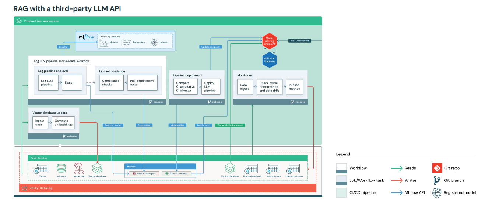
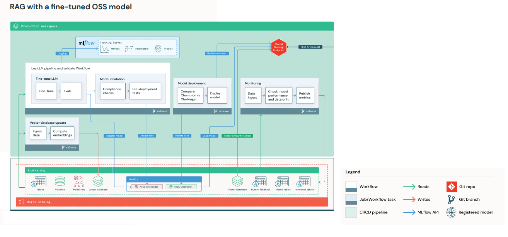

The rise of Generative AI, particularly large language models (LLMs), necessitates a reevaluation of MLOps processes for AI-powered applications, focusing on the productionization of LLMs, which have become central in both business and media. These models not only offer significant potential but also introduce new challenges for MLOps, including considerations around prompt engineering, managing cost/performance trade-offs, and deciding between using paid APIs or fine-tuning custom models. While LLM-specific operations, or "LLMOps", share similarities with traditional MLOps, adapting MLOps platforms and processes, as well as acquiring a new mental model for integrating LLMs with conventional ML workflows, is essential. The upcoming discussion will delve into key aspects such as prompt engineering, model fine-tuning, packaging, and managing costs, alongside providing a reference architecture to guide modifications in production environments to accommodate LLMs. This exploration aims to equip teams with the knowledge to navigate the evolving landscape of MLOps in the era of generative AI.
Despite the extensive list of new requirements for integrating large language models (LLMs) into MLOps processes, many existing tools and processes need only minor adjustments to adapt. Fundamental aspects, such as the separation of development, staging, and production environments, the use of Git for version control, MLflow Model Registry for model management, and the architecture for data management, remain unchanged and continue to be crucial for operational efficiency. The existing CI/CD infrastructure and the modular structure of MLOps, encompassing pipelines for model training, inference, and other tasks, also remain consistent, indicating a level of continuity in MLOps practices despite the advent of generative AI.
To illustrate potential adjustments to your reference architecture from traditional MLOps, we provide a modified version of the previous production architecture for two separate LLM-based applications:
Note that in either of these examples, the retrieval element using the vector database could be removed, and the LLM queried directly through the Model Serving endpoint

